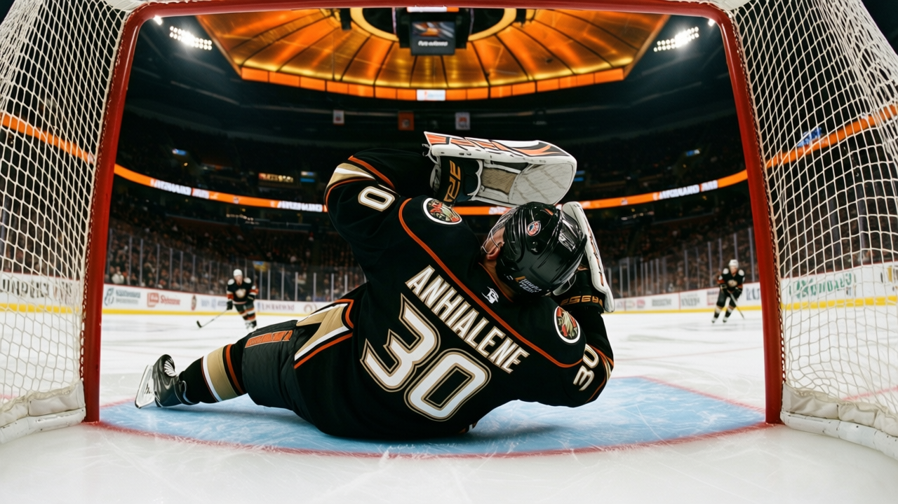

Vezina Deep-Dive: Jean-Sebastien Giguere is the best goaltender in the Book, and the 13 wins are the problem
The Book has him at 97, the highest grade at any goaltender in the league. He has won 13 of 30. The Vezina goes to a man with 20 wins.
 Howard BlaineSenior writer, The Blaine Rankings · The Hockey Gazette
Howard BlaineSenior writer, The Blaine Rankings · The Hockey Gazette
The Bureau's Book has  Jean-Sebastien Giguere97 at 97. That is the highest grade of any goaltender in the league: five points above
Jean-Sebastien Giguere97 at 97. That is the highest grade of any goaltender in the league: five points above  Martin Brodeur93's 92, five above
Martin Brodeur93's 92, five above  Marty Turco96's, five above
Marty Turco96's, five above  Tomas Vokoun90's. Giguere has played 30 games, won 13, lost 16, carried a 3.04 goals against average and a 0.869 save percentage. He has fewer wins than any goaltender in the league with a lower goals against average and at least 26 games played.
Tomas Vokoun90's. Giguere has played 30 games, won 13, lost 16, carried a 3.04 goals against average and a 0.869 save percentage. He has fewer wins than any goaltender in the league with a lower goals against average and at least 26 games played.
The Vezina, like every award in this league, ultimately lives in the win column, and the  Mighty Ducks of Anaheim Ducks have given their goaltender fewer wins than a 97-grade netminder deserves.
Mighty Ducks of Anaheim Ducks have given their goaltender fewer wins than a 97-grade netminder deserves.
The Book sees what the record cannot
Anaheim has scored 113 goals in 35 games and allowed 116. The team is 14-13-7. Seven of those losses came in overtime, which means the Ducks have been one goal away from winning seven more games, and the one goal they needed most often would have come in front of Giguere. His 0.869 save percentage is second among all goaltenders with 25 or more games played, behind only Brodeur's 0.879. On the Book, the gap runs the other direction by five points.
The scouts see something the save percentage does not capture. Giguere's 3.04 GAA is third among the 25-and-over group, behind Brodeur's 2.63 and Vokoun's 2.92. The team around him has 113 goals in 35 games, third-fewest in the Pacific. A goaltender who keeps his team in games that its offense cannot finish will always have fewer wins than his grade suggests.
"It says we're a team that can win ugly," Giguere told The Tunnel's Marcus Bell after a 5-4 victory over  San Jose Sharks on December 18. "And that's worth something."
San Jose Sharks on December 18. "And that's worth something."
He is right, and he is also understating the case. The Ducks have not won enough. Fourteen regulation wins and seven overtime losses is a team that belongs in the middle of the standings. At 37 points, Mighty Ducks of Anaheim sits 4th in the Pacific, 6 points behind  Dallas Stars, and the profit margin of $25.85M tells the front office they are not spending like a team that expects to be in October.
Dallas Stars, and the profit margin of $25.85M tells the front office they are not spending like a team that expects to be in October.
The Vezina race in numbers
| Goaltender | Club | GP | W | L | GAA | SV% | Book |
|---|---|---|---|---|---|---|---|
| Martin Brodeur |  New Jersey Devils New Jersey Devils | 28 | 20 | 8 | 2.63 | 0.879 | 92 |
| Jean-Sebastien Giguere | Mighty Ducks of Anaheim | 30 | 13 | 16 | 3.04 | 0.869 | 97 |
| Tomas Vokoun |  Nashville Predators Nashville Predators | 28 | 17 | 11 | 2.92 | 0.858 | 92 |
 Jamie Storr83 Jamie Storr83 |  Colorado Avalanche Colorado Avalanche | 26 | 16 | 9 | 2.89 | 0.864 | 77 |
| Marty Turco | Dallas Stars | 30 | 18 | 11 | 3.27 | 0.858 | 92 |
 Nikolai Khabibulin86 Nikolai Khabibulin86 |  Tampa Bay Lightning Tampa Bay Lightning | 31 | 17 | 12 | 3.26 | 0.849 | 90 |
Brodeur leads on both GAA and save percentage, and he has 20 wins. He is the Vezina frontrunner by any measure that combines individual excellence with team success. The only question is whether the voters care about the grade. Last season they gave the trophy to  Olaf Kolzig93, who finished 35-31 with a 3.17 GAA, sixth-best in goals against among netminders who played 25 games. The league has a precedent for rewarding a goaltender who was not the statistical leader. If that precedent holds, Giguere's 97 and his 0.869 on a team that cannot score make a case.
Olaf Kolzig93, who finished 35-31 with a 3.17 GAA, sixth-best in goals against among netminders who played 25 games. The league has a precedent for rewarding a goaltender who was not the statistical leader. If that precedent holds, Giguere's 97 and his 0.869 on a team that cannot score make a case.
It will not be enough. The 13 is the number that follows him into March. He needs the Ducks to score three goals a night in February, and they have done it in seven games this season. Until they do, the 97 lives in the Book, and the Vezina lives in the wins column.
What the grade means for Anaheim
At $41.01M, Mighty Ducks of Anaheim carries the second-lowest payroll in the Pacific. They are $1.11M per point, 11th in the league, and profitable at $25.85M. They have no player in the league's top 30 in scoring, which tells you that the offensive burden is spread thin. Giguere has started 30 of Anaheim's 35 games. He is the only player on the roster whose individual grade places him in the top five at his position.
The Ducks will make the playoffs if they close three of those seven overtime losses. That is the margin between a 44-point team and a 47-point team, and a 47-point team is in the race. Giguere's 0.869 is worth more than those seven losses suggest, but the Book is not the one handing out trophies.